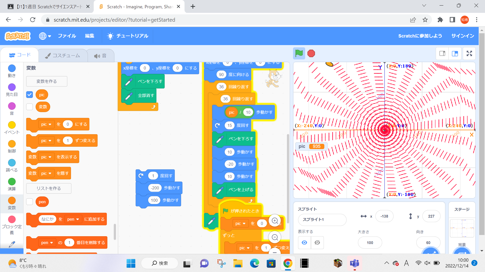

1-1 サイエンスアート

1.内容
スクラッチでスクラッチキャットを動かし、ペン機能を用いてサイエンスアートを描く。作成者のスキルによってスクラッチ内のいろいろな機能を用いてよい。
2.感想
私は今回スクラッチキャットを、回転の速度は一定に、動く速度は加速度的に速くなるようにプログラムを組んだが、あまり好みのアートができなかったので、それに加えてスクラッチキャットを前後に動くようにした。この変更により、アートの形は大きく変わり、わずかな変更でもプログラムを動かした結果には大きな違いが生じるということを身をもって実感でき、それには大きな関心を持ち、より学んでいきたいと感じるきっかけとなった。。